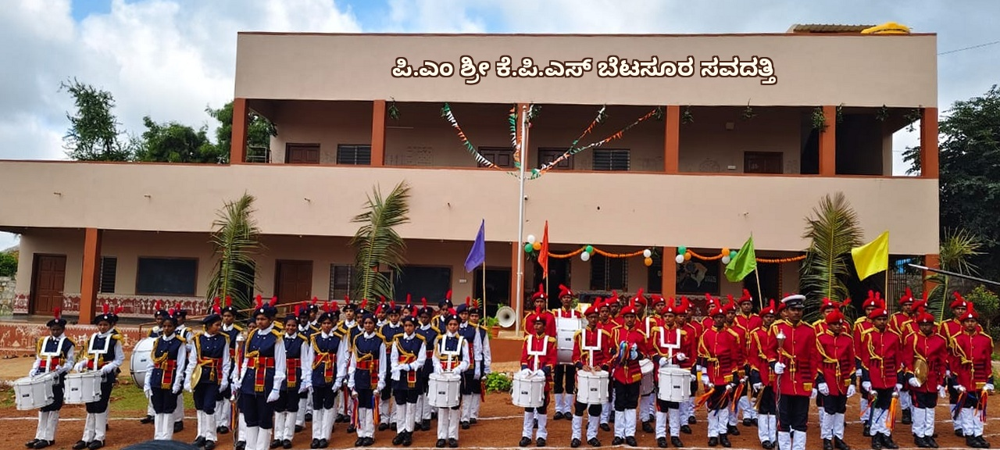

Government of Karnataka · Dept. of School Educationಕರ್ನಾಟಕ ಸರ್ಕಾರ · ಶಾಲಾ ಶಿಕ್ಷಣ ಇಲಾಖೆ
PM Shri model campusಪಿ.ಎಂ.ಶ್ರೀ ಮಾದರಿ ಆವರಣ
Smart, safe learningಸ್ಮಾರ್ಟ್, ಸುರಕ್ಷಿತ ಕಲಿಕೆ
Kannada-medium excellenceಕನ್ನಡ ಮಾಧ್ಯಮ ಶ್ರೇಷ್ಠತೆ
Educating the children of Betasur since 2019ಬೆಟಸೂರಿನ ಮಕ್ಕಳಿಗೆ 2019 ರಿಂದ ಶಿಕ್ಷಣ
PM Shri Karnataka Public School Betasur is a government school serving Betasur village and surrounding hamlets in Savadatti Taluk, founded in 2019-20 and developed as a PM Shri (PM Schools for Rising India) school — the national scheme that funds modern classrooms, labs, libraries and holistic learning in government schools.
ಪಿ.ಎಂ.ಶ್ರೀ ಕರ್ನಾಟಕ ಪಬ್ಲಿಕ್ ಶಾಲೆ ಬೆಟಸೂರ, ಸವದತ್ತಿ ತಾಲ್ಲೂಕಿನ ಬೆಟಸೂರ ಗ್ರಾಮ ಮತ್ತು ಸುತ್ತಮುತ್ತಲಿನ ಪ್ರದೇಶಗಳಿಗೆ ಸೇವೆ ಸಲ್ಲಿಸುವ ಸರ್ಕಾರಿ ಶಾಲೆ. 2019-20ರಲ್ಲಿ ಸ್ಥಾಪನೆಗೊಂಡು, ಆಧುನಿಕ ತರಗತಿ ಕೊಠಡಿ, ಪ್ರಯೋಗಾಲಯ, ಗ್ರಂಥಾಲಯ ಮತ್ತು ಸಮಗ್ರ ಕಲಿಕೆಗೆ ಧನಸಹಾಯ ನೀಡುವ ರಾಷ್ಟ್ರೀಯ ಯೋಜನೆಯಾದ ಪಿ.ಎಂ.ಶ್ರೀ (PM Shri) ಶಾಲೆಯಾಗಿ ಅಭಿವೃದ್ಧಿಪಡಿಸಲಾಗಿದೆ.
Around 400Students — Primary (LKG–8th)ವಿದ್ಯಾರ್ಥಿಗಳು — ಪ್ರಾಥಮಿಕ (LKG–8)
Around 250Students — Secondary (9th–10th)ವಿದ್ಯಾರ್ಥಿಗಳು — ಪ್ರೌಢ (9–10)
15Teaching staff — Primaryಬೋಧಕ ಸಿಬ್ಬಂದಿ — ಪ್ರಾಥಮಿಕ
8Teaching staff — Secondaryಬೋಧಕ ಸಿಬ್ಬಂದಿ — ಪ್ರೌಢ
LKG–10thLKG–10ನೇ ತರಗತಿGrades offeredತರಗತಿಗಳು
Kannadaಕನ್ನಡMedium of instructionಬೋಧನಾ ಮಾಧ್ಯಮ
